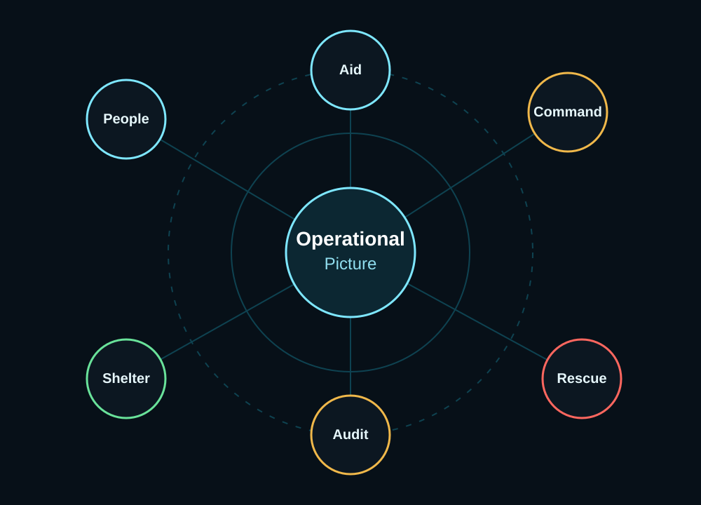

ผู้ประสบภัย
ส่งสัญญาณความต้องการและสถานะความปลอดภัย
ต้นแบบระบบประสานงานภัยพิบัติ
ระบบที่เปลี่ยนสัญญาณกระจัดกระจายจากภัยพิบัติ ให้กลายเป็นภาพปฏิบัติการที่สั่งงาน ติดตาม และตรวจสอบได้
ในช่วงน้ำท่วม ข้อมูลไม่ได้หายไป แต่กระจายอยู่ในโทรศัพท์ แชต LINE ไฟล์ Excel เจ้าหน้าที่ท้องถิ่น ทีมกู้ภัย ศูนย์พักพิง ระบบจ่ายเงินช่วยเหลือ และระบบเคลมประกัน LCCS ทำหน้าที่เป็น Operational Memory ที่เชื่อมข้อมูลเหล่านี้ให้กลายเป็นภาพเดียวที่ใช้ช่วยชีวิตและฟื้นฟูหลังวิกฤตได้จริง
ปัญหา
เมื่อเกิดภัยพิบัติ สัญญาณความช่วยเหลือเกิดขึ้นพร้อมกันหลายทาง บางคนโทรแจ้ง บางคนส่งแชต บางคนโพสต์ในโซเชียล บางทีมกู้ภัยใช้วิทยุ บางหน่วยเก็บรายชื่อใน Excel และบางข้อมูลอยู่ในความจำของเจ้าหน้าที่พื้นที่
ทบทวนแหล่งข้อมูล
ตัวเลขกรณีศึกษาฉบับเดิมยังอยู่ระหว่างตรวจแหล่งที่มา หน่วย ปี และบริบท จึงนำออกจากหน้าสาธารณะก่อน โดยเก็บต้นฉบับและประวัติโครงการไว้สำหรับทบทวน
อ่านโชว์เคส LCCS ฉบับปัจจุบันแนวคิดหลัก
LCCS ไม่ใช่แค่ระบบรับแจ้งเหตุ แต่เป็นชั้นความทรงจำกลางของวิกฤต ระบบเชื่อมผู้ประสบภัย ครอบครัว หน่วยกู้ภัย เจ้าหน้าที่รัฐ ทรัพยากร ศูนย์พักพิง เงินช่วยเหลือ และประกันภัยเข้าด้วยกัน

ขั้นตอนระบบ
รับแจ้งจากโทรศัพท์ ลิงก์ ฟอร์ม เจ้าหน้าที่ และระบบภายนอก
ตรวจซ้ำ พิกัด ครัวเรือน ความเสี่ยง และความเร่งด่วน
ผูกข้อมูลเข้ากับ event ID และ household profile
ศูนย์บัญชาการเห็น priority, route, capacity และ resource gap
ส่งงานให้ทีมพร้อมเงื่อนไข fuel, route, access และ staging area
เก็บหลักฐานภารกิจ check-in เงินช่วยเหลือ และ claim signal
ระบบผู้เกี่ยวข้อง
ส่งสัญญาณความต้องการและสถานะความปลอดภัย
แจ้งแทนและค้นหาสถานะคนในครอบครัว
รวมข้อมูลหลายหลังคาเรือนและยืนยันพื้นที่
ตัดสินใจตาม priority และทรัพยากรที่มีจริง
เห็นภาพรวมภารกิจ งบ และข้อจำกัดภาคสนาม
รับ mission พร้อม route, staging และ safety gate
ติดตามผู้ป่วย กลุ่มเปราะบาง และการส่งต่อรักษา
สนับสนุน route control, access pass และ evacuation
ดูแล shelter capacity และข้อมูลครัวเรือน
เสนอทรัพยากรพร้อมข้อจำกัดการใช้งาน
เชื่อม claim signal กับ disaster event ID
เข้าร่วมด้วย profile ทักษะและ availability
การลงทะเบียนและนำเข้า
ช่องทางลงทะเบียนต้องแยกตามความน่าเชื่อถือ ความเร่งด่วน และความพร้อมของผู้แจ้ง
เชื่อมข้อมูลหน่วยงานรัฐและ command center
เพิ่มทีม หน่วยงาน หรือทรัพยากรจำนวนมาก
รับแจ้งจากลิงก์ทางการหรือช่องทางแชต
ให้ประชาชนหรืออาสาเข้าระบบด้วยตัวเอง
โทรศัพท์เป็น signal collector ไม่ใช่ full registration channel
กระดานนำเข้าทรัพยากรเร็ว
แจ้งพร้อมช่วย แต่ต้องยืนยันคนขับและจุดลงเรือ
พร้อมส่งจากคลังเอกชน
ต้องการ fuel, access pass และ local guide
รอรถยกและจุดติดตั้งปลอดภัย
ทีม 5 คน พร้อม mobile kit
รับ mission ส่งอาหารไปศูนย์พักพิงชุมชน
Needs-first / Safety Gate
LCCS ป้องกันไม่ให้ผู้ช่วยและทรัพย์สินกลายเป็นผู้ประสบภัยเพิ่ม ด้วยการเปิด needs-first tags ก่อน assign ภารกิจ
แจ้งผ่านโทรศัพท์ / สัญญาณที่แจ้งง่าย
ผู้สูงอายุแจ้งว่าออกจากบ้านไม่ได้ 3 คน
ตีความเป็น rescue signalลูกสาวอยู่นอกพื้นที่แจ้งแทนพ่อแม่
ผูกกับ household matchรายงานบ้านหลายหลังในซอยเดียวกัน
สร้าง cluster requestผู้แจ้งตกใจ กรอกผิด แล้วแก้ข้อมูลใหม่
เก็บ version historyเหตุการณ์ดิบที่ไม่สมบูรณ์ ถูกตีความเป็นสัญญาณกู้ภัยที่ใช้งานได้
Shelter & Family Search
ความจุศูนย์พักพิง
136 / 200 คน
258 / 300 คน
144 / 150 คน
84 / 200 คน
ชั้นการเงินและประกันภัย
ใช้ “reported claims / insured-loss estimate” แทน “final paid amount” เว้นแต่มีข้อมูลจ่ายจริงแล้ว
ผูกครัวเรือน ภารกิจ หลักฐานความเสียหาย และสถานะจ่ายเงินเข้าด้วยกัน
claim ไม่ใช่แค่เรื่องหลังเหตุการณ์ แต่เป็นหลักฐานว่าพื้นที่และทรัพย์สินเสียหายจริง
เห็นของบริจาคเป็น supply node ที่มีแหล่งที่มา สถานะ และ audit trail
พื้นที่ทดลอง Prototype
ต้นแบบแผนภาพสำหรับอ่านประกอบ · ข้อมูลจำลอง · เลือกหัวข้อทางซ้ายเพื่อดูในกรอบหรือเปิดแยก ไม่มีการรับข้อมูลหรือเชื่อม API จริง
คุณค่าที่เปลี่ยนไป
ขอบเขต MVP
อย่าสร้างเกินจำเป็น เริ่มจากการตอบสนองน้ำท่วมก่อน
สรุป
เมื่อวิกฤตทำให้โครงสร้างปกติพังลง สิ่งที่สำคัญที่สุดคือการรักษาการเชื่อมต่อระหว่างคน ข้อมูล ทรัพยากร และการตัดสินใจ
LCCS ทำให้สัญญาณเล็ก ๆ จากผู้ประสบภัย กลายเป็นภารกิจ ทำให้ความตั้งใจช่วยเหลือ กลายเป็นทรัพยากรที่พร้อมใช้ ทำให้การ check-in กลายเป็นหลักฐานความปลอดภัย และทำให้การฟื้นฟูหลังภัยพิบัติมีข้อมูลที่ตรวจสอบได้
When crisis breaks the normal structure, LCCS keeps the connections alive.อ่านต้นแบบแผนภาพการรับทรัพยากรและการประสานงาน